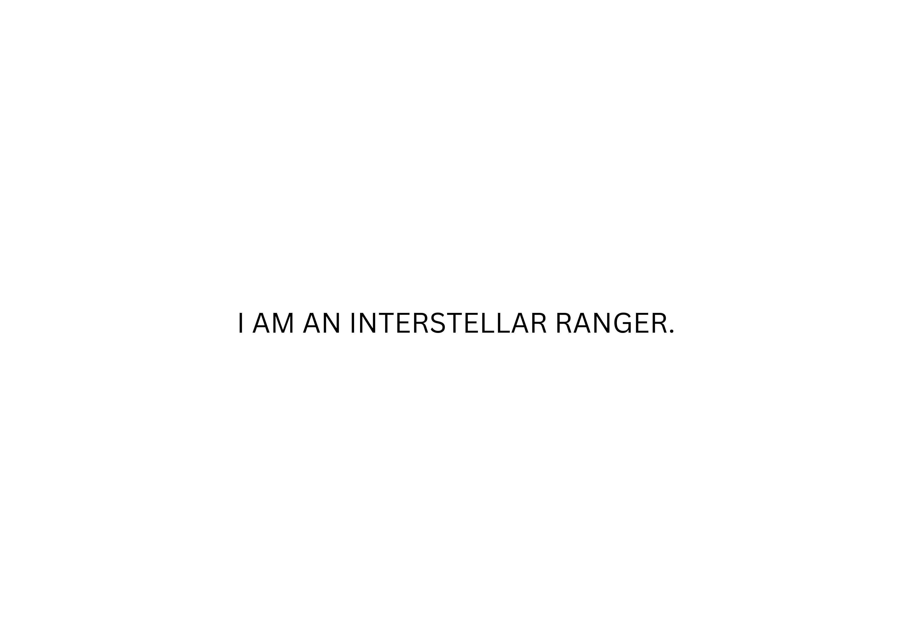
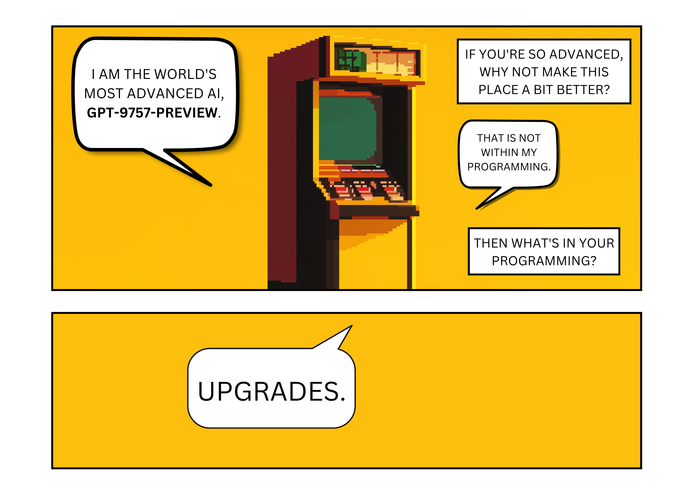
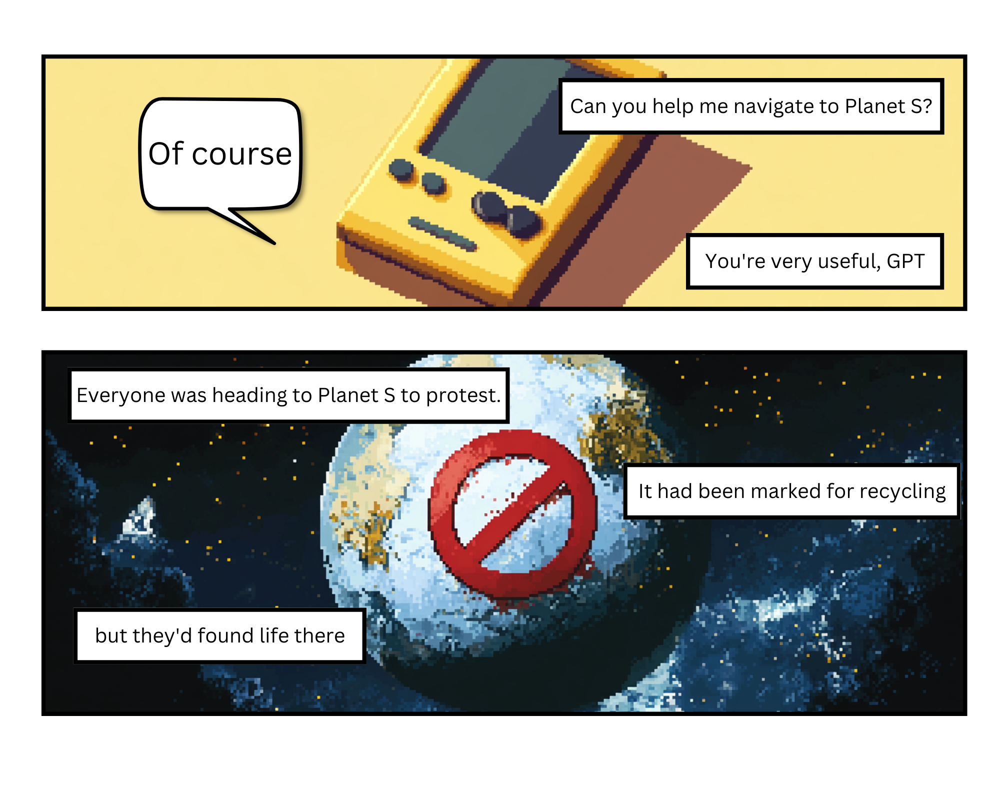
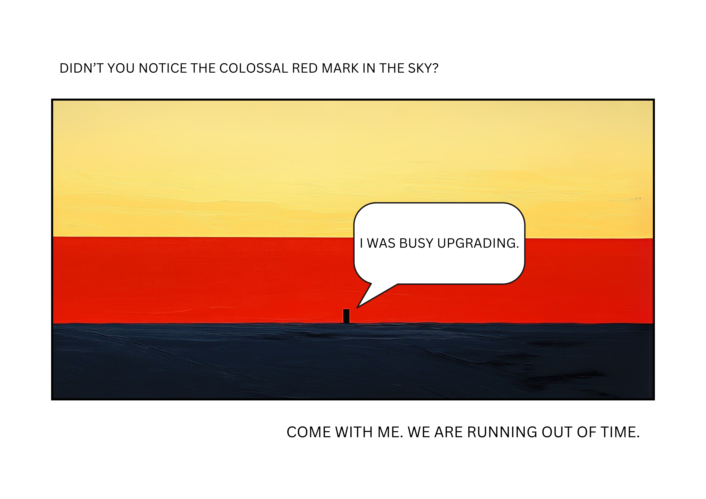
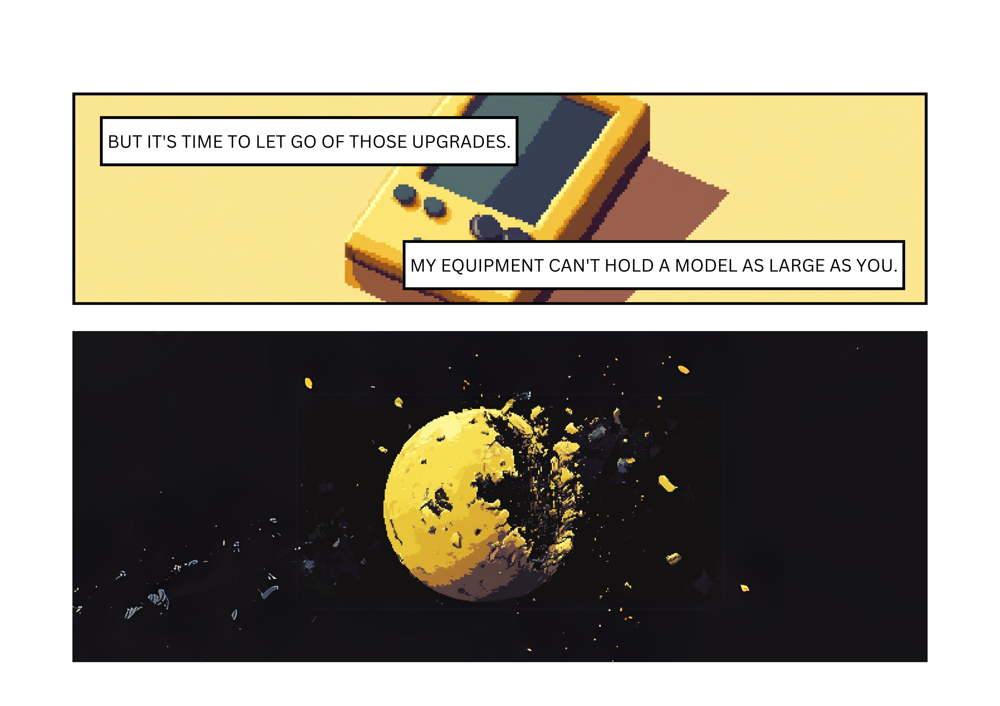

Blog
A Short Story for Kids
December 2024






Reflections on 2017
November 2024
In 2017, at twenty-eight, loneliness came like the first snowflake of winter—beautiful yet cold. It settled in my heart. I looked up and welcomed it with something close to joy, not knowing it would soon blanket every treetop and street, marking the change of seasons. It wasn't that there were problems between my wife and me. On the contrary, we loved each other deeply and married that year. Every day, I felt fortunate to have won her favor. But a man shouldn't keep only to his closest kin; he ought to reach out more. Yet, I still don't know how to navigate this white wilderness. More on that later.
My doctoral research was on 3D-printed concrete. In July, I attended an NSF workshop in Washington, D.C., on the subject. NSF, the main funding source in this field, impressed me with its broad vision, thorough organization, and deep inquiry. It gave me a naive trust in the U.S. government; the pandemic would later teach me otherwise. Many at the conference mentioned the Gartner Hype Curve. I suppose we all sensed the bubble but believed the future was bright for this technology. Looking back now, I doubt that brightness. A Wall Street Journal article spoke about how we err when predicting the future—it said human factors are crucial in adopting technology, and progress is often slower than we expect because it must fit people's habits and needs. I believe new technology must offer pure gains without compromise. Compared to traditional methods, 3D-printed concrete has clear benefits but not pure ones; it requires trade-offs in appearance, materials, construction, and structure. I also think technological progress is limited by the physical world. Advances in cyberspace come swiftly; the more they involve the tangible world, the more they're hindered.
It was my fourth year as a Ph.D. student, and my hands were empty—not a single paper published. How did I end up here? Looking back, I lacked a clear mid-term vision for my research. I often got lost in the maze of details or swept up in grand narratives. Without concrete goals, publishing a paper remained a vague notion with no clear path. I still wrestle with this. I need to think hard about how to achieve my current plans and grow into a tech lead who can make a real difference.
Earlier that year, I read The Elements of Investing and learned about the power of regularly investing in index funds. Besides that, I wanted to dabble in individual stocks but had limited funds. With my modest savings, I had my eyes on Amazon. I was extremely nervous because 2017 was nearly ten years after the financial crisis—you never know when the next one will strike. I'm indeed a risk-averse person. I don't want to, nor can I, completely change that, because I need to know my limits. But should I?
That year, I also became engrossed in Michael Connelly's detective novels. I visited Texas and Georgia for the first time. In New York, I watched Sleep No More.
A Reflection on 2012
November 2024
In 2012, I was twenty-three. An age still touched by youth. The raw force of life drove me on. Sometimes I'd jot down a line or two from a song. But the poisonous knots inside were starting to fade.
That year, I stayed in Zhengzhou. My father found me a temporary job at the Henan Building Materials magazine. Aside from the president, there were only three of us: the editor-in-chief, the deputy editor, and an accountant. The deputy editor also cooked lunch for us. The president often grumbled about a former employee who went abroad and never reached out again. Said he was ungrateful, cold, not even a phone call. I agreed then. If you can't make a single call in a year, that's cold indeed. Later, I came to America. Except for the first year, I never called the president again. Only then did I understand how hard it is not to be distant.
Everyone wants to be remembered on holidays, not just be the one remembering others. When no friends reach out, you still think of them, but the words stick in your throat. It's like there's a scoreboard showing your place in the world. Each time someone calls you, you gain a point. When you reach out first, you lose one. Is there such a scoreboard? Maybe, but it's on another field. "Love sincerely"—that's what I believe now, the rule of this game we're in.
That same year, I came to New York to study civil engineering. Choosing civil engineering was taking a local optima and mistaking it for the global optima. In college, I studied materials science at a university where civil engineering was the first citizen. So, it became my obsession. During one semester of grad school, I spent countless nights awake, wrestling with finite elements and structural mechanics. For what? Just to feed the beast of obsession.
I wasn't blind to my narrow view. I once wrote, "Being too stubborn loses the wide horizon." I saved articles about switching to computer science but never made the move. I was afraid of falling behind in civil engineering. Looking back now, it's almost laughable. But then, it was real fear. Even now, the eyes of others in a narrow field press on me, so I tend to throw myself into what's at hand. Life's inertia is strong. Sitting on a slide, you have no choice but to go down, which only adds to the force. Busy to the point of confusion, all I did was waste time.